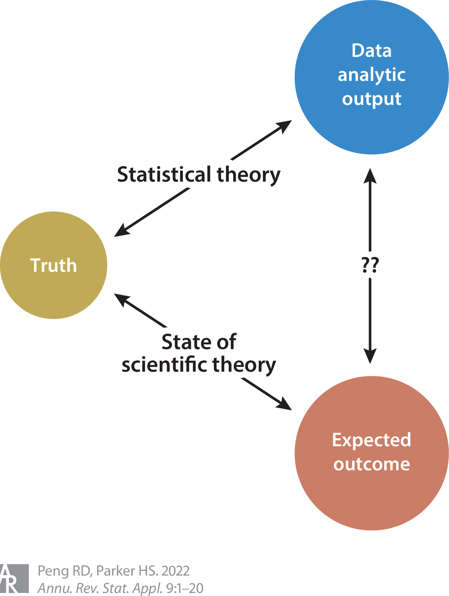

PSTAT197A/CMPSC190DD Fall 2025
UCSB
Join Slack workspace, monitor channel #25f-pstat197a for announcements.
Submit intake form and reading response.
Fill out attendance form.
Install course software and bring your laptop to section meetings. Remember your table number from today.
Data science emerged as a term of art in the last decade
Interest exploded in the last five years
Tukey advocated for ‘data analysis’ as a broader field than statistics (Tukey 1962), including:
statistical theory and methodology;
visualization and data display techniques;
computation and scalability;
breadth of application.
Look famililar? Tukey’s ‘data analysis’ is proto-modern data science.
In the 1960’s and 1970’s, these concepts meant very different things.
visualization meant drawing
computation meant data re-expression by hand
But the ideas were still somewhat radical. At the time most relied on highly reductive numerical results to interpret data:
ANOVA tables
regression tables
p-values
Figure from (Tukey et al. 1977)
The new techniques allowed for iterative investigation:
formulate a question
examine data graphics and summaries
adjust computations and graphics to hone in on content of interest
refine the question
Suppose we want to explain variation in birth-to-death ratios in the U.S. 1
Initial question: is population density an associated factor?
A first attempt
What if we adjust the computation?
What about median age instead?
Adjust computations for easy linear approximation
Are there outliers?
Are outliers spatially correlated?
It’s worth noting that in the first half of the 20th century, much of statistics focused on methodology and theory for the analysis of small iid samples, and in particular:
inference on means and inference on tables;
analysis of variance;
tests of distribution.
The inferential framework brought to bear on these ‘simpler’ problems largely carried over when the field began to specialize.
From 1960-2010, adopters of the ‘data analysis as a field’ view were largely industry practitioners and applied statisticians who advocated for training and practice that included empirical methods and computation in addition to statistical inference (Donoho 2017).
Their ideas evolved into an alternative approach to working with data:
data-driven rather than theory-driven;
iterative rather than conclusive.
The “confirmatory” approach of the classical inferential framework.
output is a decision
statistical model determined by experimental design
analysis based on statistical theory
The “exploratory” approach of iterative modern data analysis.
outputs are findings
statistical model determined by data
analysis techniques include empirical methods
In the 2000s and especially after 2010, the iterative approach enjoys broader applicability than it used to:
due to automated and/or scalable data collection
observational data is widely available across domains
and includes large numbers of variables
highly specialized data problems evade methodology with theoretical support
more accessible to analysts without advanced statistical training
Machine learning was largely advanced by computer scientists through 2010 and later (Emmert-Streib et al. 2020), most notably:
neural networks and deep learning
optimization
algorithmic analysis
This was a major driver in advancing modern predictive modeling, and engaging with these tools required going beyond statistics.
Around mid-century, it was proposed that specialists should be trained in computational as well as statistical methods
Over time practitioners developed iterative processes for data-driven problem solving that was more flexible than the classical inferential framework
Computer scientists advanced the field of machine learning substantially
Iterative problem solving together with applied machine learning was well-suited to meet the demands of modern data, but the area was not codified in an academic discipline
Research is systematic investigation undertaken in order to establish or discover facts.
What are facts in data science?
method M outperforms method M’ at task T
we analyzed data D and reached the conclusion that…
Formal communities – i.e., journals, departments, conferences – have not coalesced around data science research to date.
Relevant research largely occurs in statistics, computer science, and application domains, and can be divided broadly into:
methodology – creating new techniques to analyze data
applications – applying existing methods to generate new findings
Methodological research might involve:
designing a faster algorithm for solving a particular problem
proposing a new technique for analyzing a particular type of data
generalizing a technique to a broader range of problems
Applied research might involve:
analyzing a specific dataset or producing a novel analysis of existing data
creating ad-hoc methods for a domain-specific problem
importing methodology from another area to bear on a domain-specific problem
Most of the time, our data science capstones fall pretty squarely in the applied domain:
sponsor provides data and high-level goals
student team works on producing an analysis or analyses
mentor advises on methodology
There are a few avenues to prepare for this sort of work.
We’ll focus on:
recognizing problem patterns
developing a functional view of methodology
collaborating efficiently
independent learning strategies
engaging with literature constructively
It won’t provide you with exhaustive methodological preparation, but should support you in learning ‘on the job’.
Questions on the perspectives paper (Peng and Parker 2022) to review:

Several systems affect the relationship between expected and actual results. Where would you locate them on the figure?
Data analytic
Software
Scientific
How might this diagram help an analyst?
The design thinking framework might be summed up:
data scientists trade in data analyses
a data analysis is a designed product
thinking about design principles can help make a better product
Many of you focused on how design principles are a response to project constraints. Are there other ways a design perspective might be useful?
You’re working at a news organization and developing a recommender system for targeted article previews to deploy on the organization’s website. It will show users article previews based on their behavior. Assume you don’t have any significant resource constraints, and can access users’ profiles in full and log interactions in near-real-time.
Goal: show previews most likely to attract interest.
Considerations:
what material should be shown in the preview? headlines? images? text?
what behavior can/should be leveraged for the recommender system?
what are a few relevant design aspects of how the system should behave?
are there ethical concerns?
You’re working on a research team studying ecological impacts of land use. The team has access to longitudinal species surveys at locations of interest across the U.S., quarterly county-level land allocation statistics, satellite images, and state budget information for sustainability, restoration, and conservation initiatives.
Goal: identify intervention opportunities that are most likely to positively impact ecological diversity.
Considerations:
what data would you use and how would you combine data sources?
are there external data that might be useful?
what analysis outputs would be most important for identifying intervention opportunities?
can you think of other design features that might be useful for the data analysis?
Let’s look at some design principles from (McGowan, Peng, and Hicks 2021).
We’ll do a github icebreaker activity.
Complete lab activity from Wednesday section meeting
Bring laptops
PSTAT197A/CMPSC190DD Fall 2025